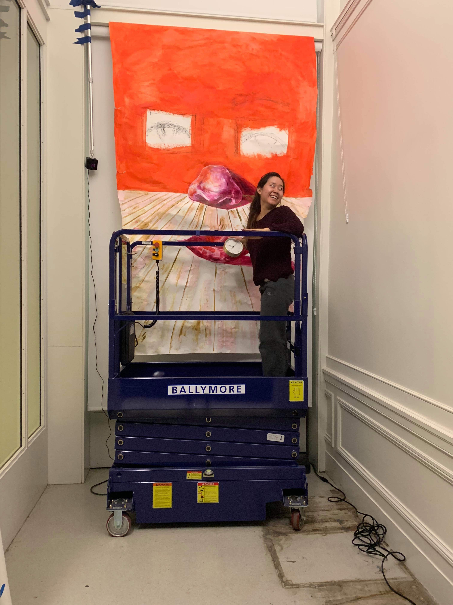

Current art consumption culture detaches viewers from the art itself, viewed at a distance in formal and uninviting galleries. Through this art piece, I wanted to create a unique space where viewers felt uniquely connected to me, the artist, the forms captured in the space, as well as their own form and agency to affect change within the art piece. Photogrammetry combined with physical controls and interactions create an inseparable blend of the digital and physical. The impact of these piece is best described by the people who experienced it...
"Once the headset was on and I felt alone in the space, I was overcome with a feeling that I can only compare to reading my sister’s diary when I was a little girl."
"The emotional takeaway of feeling like I was entering into the creative part of your brain itself I think can only be compared to what it would be like to enter into someone else’s memory."
" When I was able to take on the role as master of time , I was no longer a mere visitor of the space, I was intertwined with the process of creation and destruction."
"I was impacting the space -- a part of me instead felt that the clock was allowing me to see layers of it that were previously unknown to me. I was still a viewer but I had autonomy over what I was seeing, and I that is a lot more interesting."
Viewers enter a small room with wall to wall figure drawings and physical objects displayed with a “Please do not touch” sign. Viewers can then put on the headset to see they are in the same room that has become slightly blurred and altered space. The please do not touch sign has become a “Please DO touch” plaque that prompts users to pick up the clock and turn the gear. As the hands spin back in time, the drawings on the walls slowly disintegrate, leaving blank spaces where figures used to be. Viewers feel a sense of loss and try to retrieve the drawings when small gestural figures start appearing in the space around them. The user cannot affect these figures as they interact with each other and them, making them individual beings.
My initial proposal for the project was vastly different from where creation took me. I proposed a three part experience to make viewers think about their perception of physical space through its...
1. Passage through time
2. Interaction with “empty space”/air
3. Ambient sounds
I drew from a wide breadth of inspiration, some of them being: Persistence of Memory by Salvador Dali, the game Run, Wassily Kandinsky, Flatland, and SuperHot VR
However, after spotting an especially nice corner of the room that I could section off without dealing with conflicting signals from other Vive setups, I decided to run with the space and decorate it for photogrammetry. With a loose theme of the human form in mind, I ended up painting a huge piece of butcher paper, buying clocks, and posting my old figure drawing sketches and portraits along the wall.
Once the final environment was created, with additions of pedestals for a mannequin and clock, I took around 500 hundred photos of the environment and stitched them together with Reality Capture.

I moved these objects into Oculus Medium to patch missing planes and generally clean up the models. I then exported the files to Unity to create the basis for my virtual environment.
I then decided to fill the space with autonomous figures. To do this I sketched figures in Google Tiltbrush. I was able to add rigging to the objects using Maya, and to add animations to these figures with Mixamo. Each figure's size and animation were catered to its location, creating moments of delight for the viewer to discover with more detailed inspection of the virtual scene.
I imagined users being able to interact with a physical clock to turn back time, before the figures were captured in a canvas or drawing. Unfortunately, attempts at arduino syncing did not work, so I connected the Vive tracker to the back of a clock and registered that rotational movement in Unity.
Once this interaction was locked in I animated blocks to cover the drawings as the clock turned back time. I had a few people test my environment and experience, resulting in a few interaction changes.
1. Making the clock interaction more attention grabbing, I experimented with adding ridging and color to the tracker in Unity to convey that it could be rotated
2. Timing changes on the drawings being covered up to slow down the experience and increase understanding of the time shift
3. Striking balance of subtle versus in your face. I added a sign "please DO touch" to the clock in the virtual environment, but viewers staring directly at it still thought they saw "please don't touch". It was exciting to play with this phenomena.
It was then ready to display! I had fun showing the project to the many people that came in during the short few hours in which it was open for the public.